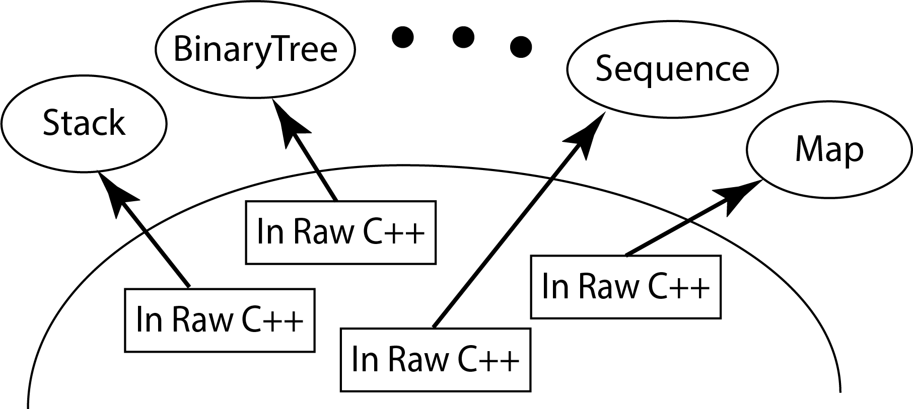
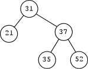
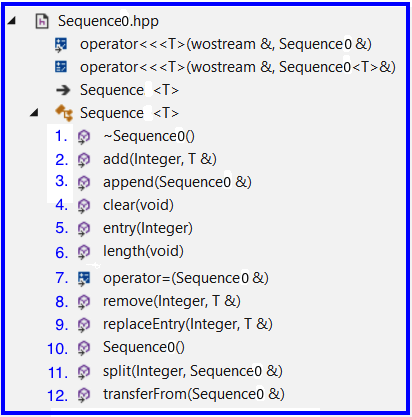

2.1 Primary ObjectivesThe primary objective of this lab is to provide you experience with:
|
 |
Steps:
Hints:
Important Restrictions:
|

Nested list representation: (31,(21,E,E),(37,(35,E,E),(52,E,E))) Uses 3-tuples of: (label, left, right) where E = Empty Tree |
Includes:

Upload a completed Sequence0.hpp file to the ProjP2 Moodle assignment